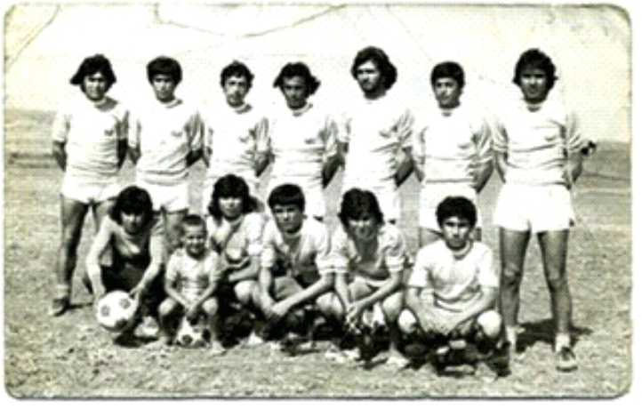

Adana’da da spor dallarından en yaygını tüm dünyada olduğu gibi futboldur. Adana’nın futbol tarihi Türkiye futbol tarihinin de çok gerisinde değildir. Adana da ilk futbol takımları 1920’lerde kurulduğu zannedilen Türkocağı ve Gençlerbirliği’dir. Bu iki takım 1928 yılında birleşerek İdman Yurdu adını alırlar. 1928’de Beden Terbiyesi Bölge Müdürü Rıza Salih Saray’ın önderliğinde Seyhanspor, üç yıl sonrada Torosspor futbol sahalarına merhaba der. Böylece 1931’de Çukurova ligi kurulur. Çukurova ligine 1939 yılında Milli Mensucat, 1940 yılında Sümerspor ve Adana Demirspor dahil olur.
İlk derbide Adanaspor’u 7-0 yenen Adana Demirspor takımı Günümüzde olduğu gibi geçmiş yıllarda da futbol, yönetici bazında belli bir azınlığın ilgi alanındadır. Ancak oyuncu bulmak oldukça güçtür. Bu durum özellikle o yıllarda küçük kulüpleri birleşmeye zorlar. 1954 yılında İdman Yurdu, Seyhanspor ve Torosspor birleşerek Adanaspor kurulur. Böylece Adana’da Adana Demirspor’dan sonra uzun yıllar birbirleriyle rekabet halinde olacak olan iki takım kurulmuş olur. Böylece ülkemizde İstanbul ve İzmir’den sonra Anadolu’da ilk derbi heyecanı Adana’da yaşanmaya başlar.
Adana Demirspor ile Adanaspor arasındaki ilk maç 18.11.1956 tarihinde Adana 5 Ocak stadında oynanır. Adana’nın bu tarihi ilk derbisinde Adana Demirspor, Adanaspor’u tarihi bir farkla 7-0 yenerek hezimete uğratır. Böylece Türkiye’nin iki köklü takımı Adana Demirspor ve Adanaspor arasındaki rekabet ilk maçtan itibaren başlar. Bu rekabet 60 yıldır kimi zaman dostlukla kimi zaman da karşılıklı sertliklerle devam eder.
Adanaspor ve Adana Demirspor arasındaki rekabet kuruluş aşamalarındaki sosyokültürel ve ekonomik gerekçelerede dayandırılabilir. Adanaspor, 1960’lı yıllarda Adana Demirspor’un kentte gittikçe büyüyen bir prestij unsuru ve buna bağlı bir rant kapısı olmaya başlaması ile birlikte, pastadan yeterli payı alamadığına inanan ve bunu da Adana Demirspor’un kentteki tek futbol takımı olması gibi dayatmasına karşılık, çoğunlukla esnaf ve küçük işletme sahipleri tarafından kurulmuştur. Sınıfsal açıdan bakıldığında Adana Demirspor’un kökenleri demiryolu çalışanlarına yani işçilere dayanır, ancak zamanla yörenin en önemli kulübü haline gelmesiyle birlikte, büyük toprak sahiplerinin de içinde yer almak istediği bir oluşum haline gelir. Böylece, alt ve üst sınıfların bir karışımı ile camianın yapısı şekillenir. Adanaspor ise daha orta sınıf bir tabana dayanır. Adana Demirspor 1950-70 arası önemli başarılar elde ederek yıldızını parlatırken, popüler olmanın getirdiği dejenerasyona da maruz kalır. Arkadan gelen Adanaspor ise bu durumu lehine çevirip, kolej takımı havası ile 1970 ve 80’lere damgasını vurur. Kenti Avrupa’da temsil eder.
Adana Demirspor’ un “ŞİMŞEKLER” grubu kuzey kale arkasında yer alırken, Adanaspor’ un taraftar grubu “TURBEYLER” güney kale arkasında bulunur. Zaten stad ortadan ikiye bölünmüş gibi bir tarafı mavi renkte iken diğer tarafı turuncudur. İki takımın maçlarında Adana sokakları mavi lacivert ve turuncu beyaza boyanır. Her ne kadar iki takım taraftarları aynı memleketin insanı olsa da, bu derbinin yarattığı gerilimden dolayı, bazen tasvip edilemez olaylar gerçekleşir. İki güzide Adana kulübünün de en büyük handikapları, birbirlerine olan aşırı rekabet duygusudur. Bir zamanlar taraftarlar aynı sokaktan beraberce stada gidip maçı beraber izlerken zaman içinde rekabetin kızışması, ülkenin gerilim ortamının artması, siyasi bölünmeler ve kamplaşmalar, takım ve taraftarların ruhuna da yansır. Bunun sonucu olarak şehir, insanlar, taraftarlar ve tribün ikiye bölünür. Her iki taraf arasındaki dostluk rekabeti yerini zaman zaman farklı çatışmaya dönüştürür. Ancak genel olarak denilebilir ki iki ezeli takımın birbirine karşı izlediği rekabet, daha çok iki kardeşin didişmesi gibi değerlendirilebilir. Veriler, anlatılanlar ve yaşananlara bakıldığında; derbi rekabeti sahada genellikle Adanaspor’un, tribünde ve kentin genelinde ise daima Adana Demirspor’un üstünlük kurduğu rekabettir. İki köklü kulübün birbirine destek olması, taraftarların dış takımlarla olan maçlarda iki Adana takımına destek vermesi, Adanaspor ve Adana Demirspor’a yarar sağlayacak, Adana futbolunun önünü açacak ve yıllar öncesinde olduğu gibi Adana takımlarını Türkiye futbolunda önemli yere getirecektir.
Tüm Hakları Saklıdır. © | 2022
Design by M.İ.K